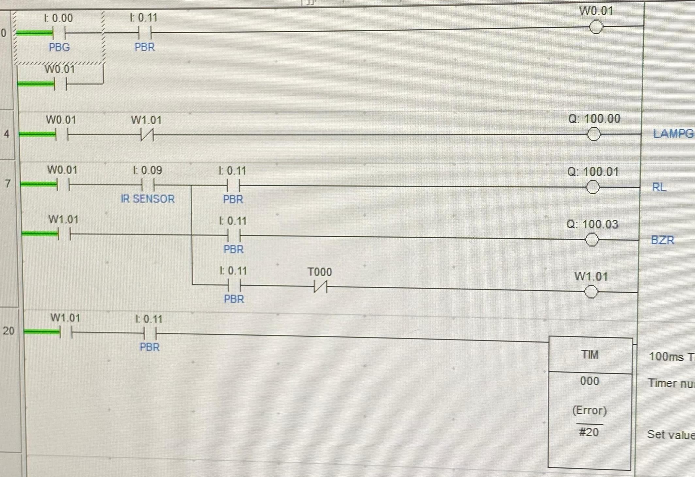
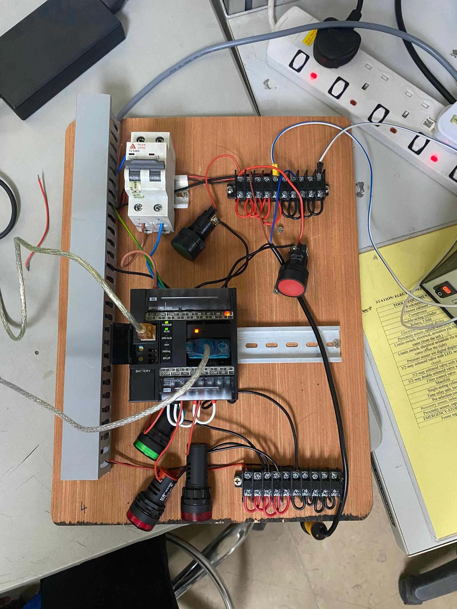
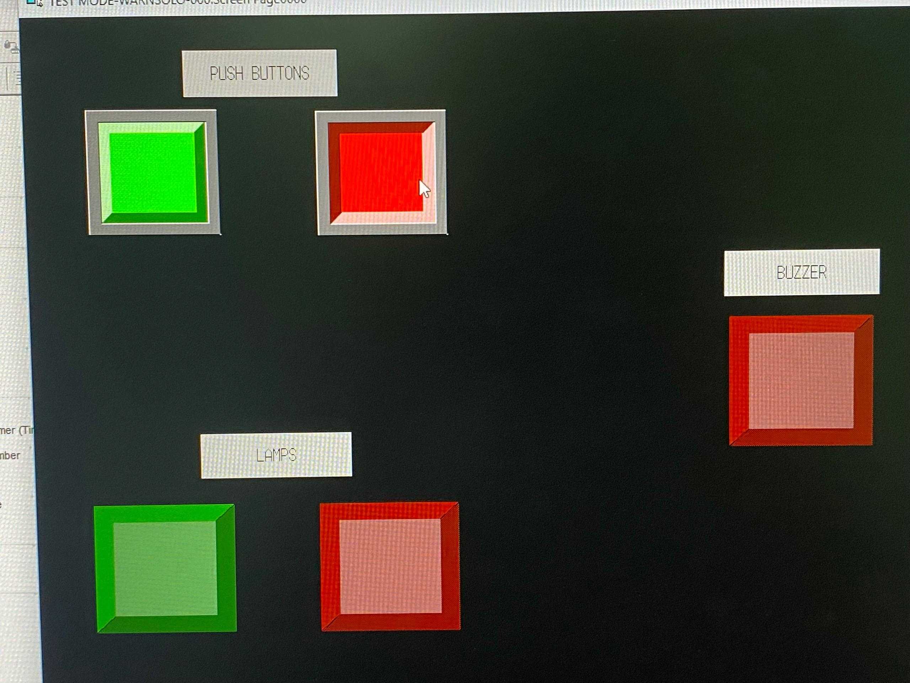
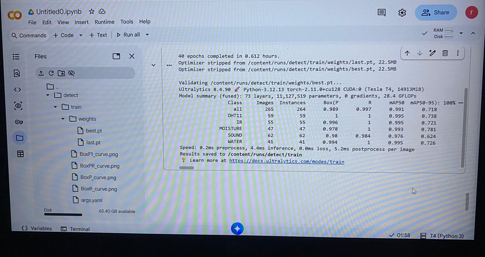
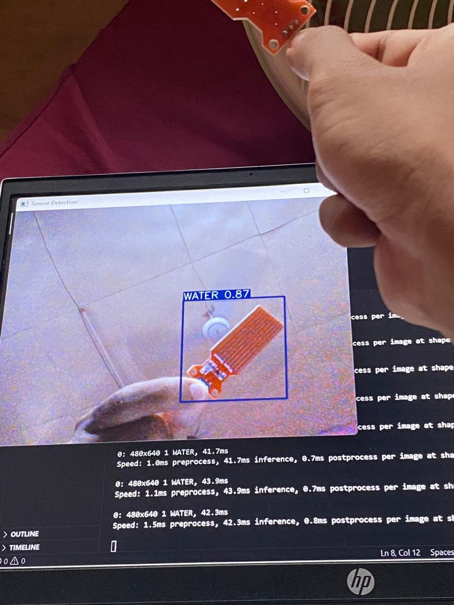
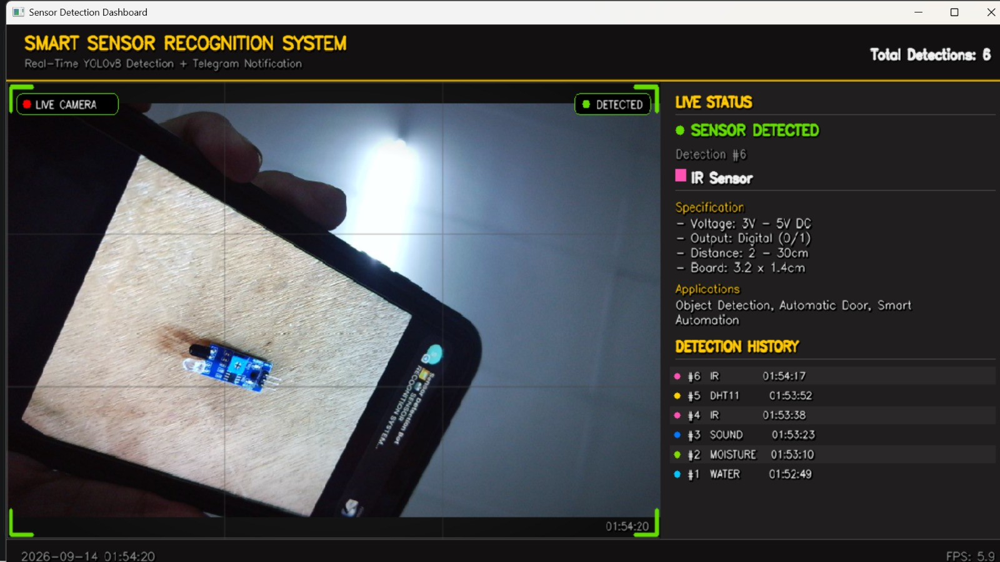
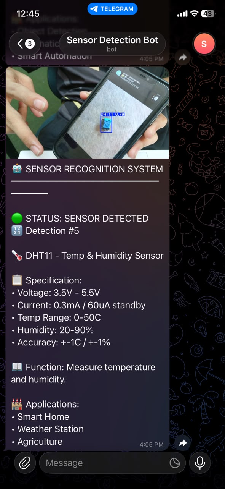

Muhammad Ridwan
bin Kamarudin
Pelajar Diploma Kejuruteraan Mekatronik, Politeknik Kota Kinabalu
- ridwancihuy.462@gmail.com
- +60 14-375 3958
- Lahad Datu, Sabah
Tentang saya
Saya belajar mekatronik di Politeknik Kota Kinabalu, dengan asas dalam reka bentuk mekanikal, litar elektrik dan sistem automasi. Kerja yang paling saya minat ialah bila sistem kena diuji betul-betul — cari punca masalah litar, tulis logik kawalan, dan pastikan ia berjalan stabil. Sekarang saya mencari tempat latihan industri untuk guna kemahiran ni di lapangan.
Projek
Sistem pengesan amaran item berasaskan PLC & HMI
April 2026DJM40242 — Programmable Logic Controller
- Bina prototaip pengesan item automatik guna Omron CX-Programmer dan CX-Designer.
- Sambung logik ladder PLC dengan skrin HMI untuk pemantauan dan kawalan masa nyata.
- Uji sensor dan kawalan sentuh untuk pastikan operasi stabil.



Sistem pengecaman sensor guna pemprosesan imej & AI
Januari 2026DJJ50403 — Projek 2
- Latih model YOLOv8 tersuai menggunakan Roboflow dan Google Colab.
- Tulis skrip Python dalam VS Code untuk tangkap dan proses video langsung.
- Bina antaramuka kamera (camera GUI) untuk memaparkan kotak pengesanan (bounding box) dan skor keyakinan secara real-time.
- Rekod hasil pengesanan dalam jadual log, dan sambung Telegram API untuk amaran keselamatan segera.




Aktiviti sepanjang pengajian
Pilih semester untuk lihat aktiviti, dean's list dan program yang disertai.
Contoh: Program Orientasi Pelajar Baharu
Jul 2024- Terangkan ringkas apa aktiviti ni.

Contoh: Anugerah Dekan
Feb 2025- Terangkan ringkas pencapaian atau aktiviti sem 2.

Contoh: Aktiviti Mechatronic Club
2025- Terangkan ringkas aktiviti sem 3.
Contoh: Workshop / Kursus Tambahan
2025- Terangkan ringkas aktiviti sem 4.
Contoh: Projek Akhir / Latihan Industri
2026- Terangkan ringkas aktiviti sem 5.
Pendidikan
Diploma Kejuruteraan Mekatronik
Jul 2024 — kiniPoliteknik Kota Kinabalu, Sepanggar · PNGK 3.50
Sijil Pelajaran Malaysia
2019 — 2024SMK Agaseh, Lahad Datu · Perakaunan, Matematik Tambahan
Kemahiran
- PLC & automasiOmron PLC (pengaturcaraan, pemasangan, ujian fungsi), rajah ladder, tafsiran rajah skematik, penyelesaian masalah litar
- PerisianCX-Programmer, CX-Designer, Control FPWIN Pro 7, AutoCAD, MATLAB
- PengaturcaraanPython, C++, YOLOv8 / Roboflow, Google Colab
- SistemHMI, sistem pneumatik berjujukan
- BahasaBahasa Melayu (ibunda), Bahasa Inggeris (asas)
Anugerah
- 2025 Anugerah Dekan, Jabatan Kejuruteraan Mekanikal
- 2025 Anugerah Dekan, Jabatan Kejuruteraan Mekanikal
- 2026 Anugerah Dekan, Jabatan Kejuruteraan Mekanikal
Hubungi saya
Kalau ada peluang latihan industri dalam bidang automasi, kawalan atau penyelenggaraan, boleh emel saya di ridwancihuy.462@gmail.com atau telefon +60 14-375 3958.